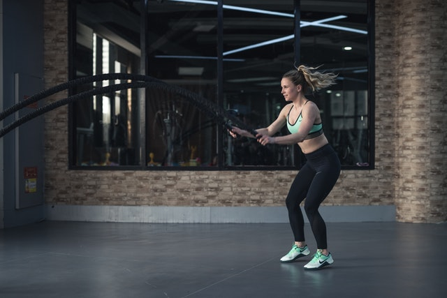
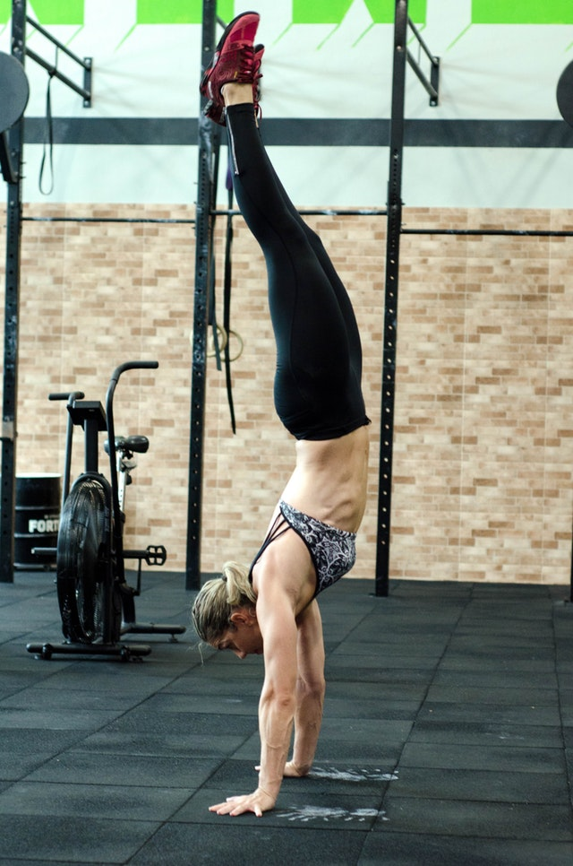
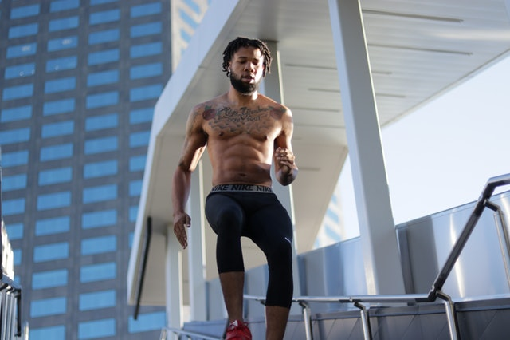
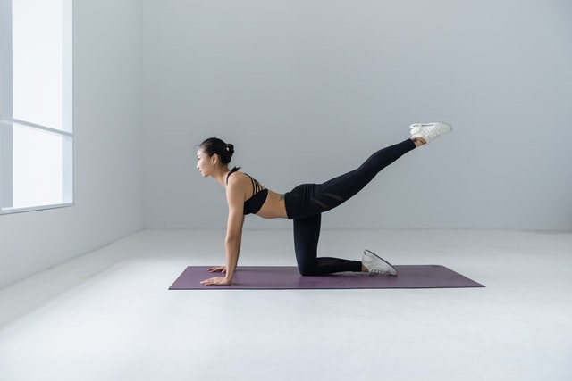

   
Resistance Training Tips
1) Full Range of Motion
Every repetition should begin at the bottom and end at the top of the movement.
2) Progressive Overload
-Theory that increasing resistance in training sessions over time, overloading perceived or former limits, will result in strength and muscle gains. To increase the resistance, any regular exercise routine requires an increase in intensity. Here is a few ways to do that:
- limit rest intervals (HIIT)
- increase resistance (strength training)
- increase quantity of reps (GVT)
- increase explosivity
- slow down the negative
3) Learn How to Fail Safely
"failing" on the last repetition of a set can be mild or catastrophic. A mild example could be a formal failure which happens when no longer can the correct form or posture be maintained for the lift. At that point, there's failure and the exercise should be stopped. Injury is to be avoided, but the participant has to approach the danger of getting injured, so they must learn their individual limits by experimenting with small increments at their perceived strength limits.
4) Fail Safely Often
-on the last rep.
-to avoid danger and stress some prefer to "leave one rep in the tank" - that is, they never take a set to failure. This is a fair practice for people who know their limits, which is hard to surmise if you're not taking sets to failure.
-Anywhere from 5-15 reps
-Or max around 30 secs
5) Change Modality Without Results
-try different rep ranges, weights, rest intervals, etc if the same conditions occur and progressive overload is stalled.